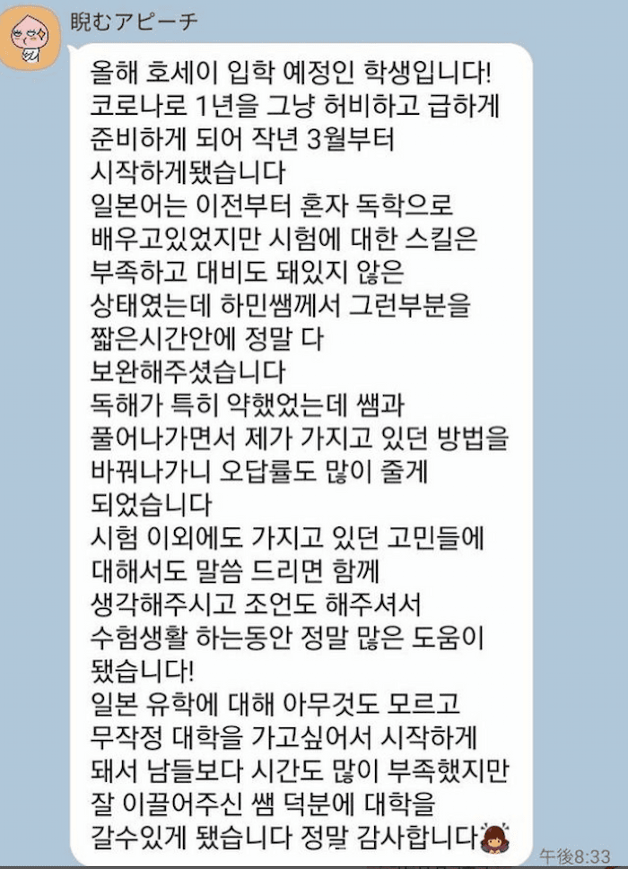
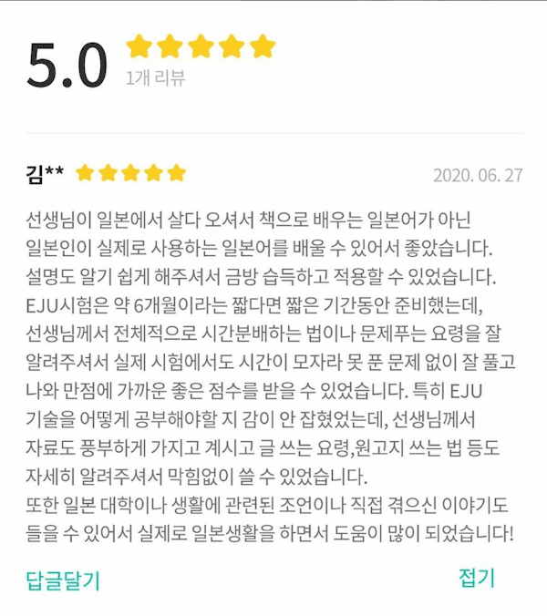

와세다 출신 원장 직강
일본 대학 입시를 직접 경험한
원장이 가르칩니다.

신사동 가로수길 · 일본어 1:1 맞춤 수업
EJU부터 지망이유서·면접까지.
한 사람의 목표에 맞춰, 함께 준비해요.
오직 나에게 맞는 수업
지금의 실력과 목표 대학, 공부할 수 있는 시간까지.
탄소쥬크는 한 사람의 이야기를 먼저 듣습니다.
일본 대학 입시를 직접 경험한
원장이 가르칩니다.
현재 수준과 목표에 맞춰
배우는 속도와 방향을 정합니다.
EJU·JLPT부터 출원과 면접까지.
필요한 준비를 연결합니다.
강사진
탄소쥬크 합격 실적
51명총 51명 합격수강생이 직접 남긴 이야기를 읽어보세요.
 전체 이미지 보기 ↗ (새 창)
전체 이미지 보기 ↗ (새 창)안녕하세요. 오는 4월에 니혼대학 법학부 공공정책학과에 입학 예정인 탄소쥬크 하민쌤 제자입니다.
저는 지난 22년 12월에 탄소쥬크에 처음 왔는데, 그 이전에도 일본 대학 입시를 위해서 대형학원과 독학 등 여러 방법으로 공부를 해 봤지만 EJU 성적도 그렇고 모든 입시가 잘 풀리지가 않아, 하민쌤을 찾아왔습니다. 하민쌤과 같이 공부를 하면서 가장 큰 장점으로 느껴졌던 것은 수업도 그렇고 모든 과정을 1:1로 학생의 상황에 맞게 지도를 해주셨던 것으로 생각되어집니다.
EJU를 준비하면서 무작정 모의고사나 문제풀이만 하는 것이 아니라 제가 부족했던 부분을 중심으로 하나하나 알려주셨던 것이 가장 크게 도움이 되었다고 생각합니다.
탄소쥬크의 무엇보다 큰 장점은 EJU 문제풀이 뿐만 아니라 지망이유서·소논문 까지 학생 개인에 맞게 지도와 첨삭을 해주셨던 것으로 생각합니다. 특히 제가 합격한 학부는 본고사의 비중이 큰 학부라 지망이유서와 소논문이 가장 큰 합격 요인이라고 생각합니다.
대형학원과 독학을 하면서 입시 결과가 좋지 않아 일본 유학을 포기할까도 고민했던 시절에 다행스럽게도 하민쌤을 만나 첫 유학을 시작했을 때 지망했던 학교에 합격할 수 있었습니다!
 전체 이미지 보기 ↗ (새 창)
전체 이미지 보기 ↗ (새 창)2023년도 메이지대 국제일본학부로 입학 예정인 학생입니다! 저는 친구 소개로 하민쌤 수업을 듣게 되었는데 덕분에 정말 많은 도움을 받았다고 생각합니다 🥺🥲 우선 저는 하민쌤 수업만으로 eju 기술에서 만점을 받을 수 있었습니다! 또 매주 모고를 풀면서 스스로 생각하고 정리하는 법을 길러 성적이 크게 오를 수 있었습니다!
또, 일본 입시에서 eju점수도 물론 중요하지만 성적만큼이나 지망이유서•면접이 중요한데 선생님의 수업 덕분에 정말 완성도 높은 지유서와 예상되는 질문들을 모두 정리하여 면접에서 자신이 하고자 하는 바를 잘 표현해서 합격이라는 결과를 받을 수 있었다고 생각합니다 ! 마지막 일주일동안은 3곳의 면접을 준비하느라 정말 힘들었는데 선생님께서 꼼꼼히 봐주시고 격려해주셔서 끝까지 할 수 있었습니다 !! 선생님 수업 아니었으면 저는 아직 수험생일지도 몰라요...정말 감사합니다 !!!💗🫶🫶🎀💗🥺
 전체 이미지 보기 ↗ (새 창)
전체 이미지 보기 ↗ (새 창)하민쌤 수업듣고 이번에 23학번이 될 학생입니다🍀🍀 하민쌤을 만나기 전에는 정말 어떤식으로 일본어 공부를 해야할지 잘 몰라서 갈팡질팡 했었습니다!! 하지만 선생님을 만나서 N2문법부터 처음부터 다시 잡고 일본어에 조금씩 감을 잡기 시작했습니당!! 저는 청해랑 청독해가 정말 너무 안들려서 힘들었는데 선생님께서 쉐도잉을 숙제로 내주거나 수업시간에 한번씩 시키는데 정말 많은 도움이 되었습니다!! 또한 저는 멘탈이 너무 약해서 정말 유리일 정도 였는데 하민쌤을 만나고 멘탈이 조금씩 강해지고 선생님의 조언과 위로 덕분에 힘든 입시생활 잘 견딜 수 있었던 것 같습니다💕💕감사합니다 쌤!!
그리고 하민쌤의 정말 비장의 무기라고 할 수 있는데요😎 진짜 지유서와 면접 수업은 하민쌤을 따라 갈 수업이 없다고 생각합니다!! 자료조사부터 철저하게 하고 추가로 필요한 부분은 선생님이 기사를 추가적으로 보내주십니다! 이렇게 지유서에서 자료 조사를 열심히 해서 면접 준비도 수월하게 할 수 있었습니다!!! 모의면접도 여러번 선생님이랑 하는데 나올만한 질문과 실제 면접 태도를 실전처럼 해서 면접 때 떨지 않고 잘 할 수 있었습니다!!
( @+지유서 때 열심히 조사한 결과 교수님들이 이런 정보 어디서 알았냐고 칭찬도 받았습니다✌️)정말로 하민쌤과 일본어 + 지유서 + 면접 준비는 정말 완벽 한 것 같습니다!! 정말 선생님 덕분에 원했던 칸세이가쿠인 대학교에 합격 할 수 있었던 것 같습니다!! 🥰🥰🥰
하민쌤 정말감사합니다!! 정말로 제 인생에 최고의 선생님 이십니당🥹❤️
 전체 이미지 보기 ↗ (새 창)
전체 이미지 보기 ↗ (새 창)2023년도 메이지 입학 예정인 학생입니다!
저는 하민쌤과 지망이유서 중심의 수업을 진행했었는데 그 안에서 가장 좋다고 느꼈던 점은 선생님과의 커뮤니케이션이었던 것 같아요! 희망 학부는 있었지만 명확한 장래희망이 따로 없던 상태여서 지유서가 다른 무엇보다 힘들었는데, 수업 시간 외에도 아이디어가 떠오르면 선생님한테 카톡으로 물어보면서 지유서의 틀을 잡고, 구체화시킬 수 있었습니다☺️또한 선생님께서 관련된 직업은 이러한 게 있다고 제시해 주시고 자료들을 보내주셔서 그것을 토대로 참고하여 개성 있는 '나만의 지유서'를 차곡차곡 완성해 나갈 수 있었습니다!덕분에 면접 준비할 때도 엄청 도움이 됐어요:) 원래 지유서 쓰는 방법을 제대로 몰라서 글자 수 채우기에 급급했는데, 하민쌤과의 수업을 통해 한정된 글자 수 안에서 나를 어필하는 방법을 극대화할 수 있었던 것 같습니다! 그리고 쌤이 수업 때 제가 열심히 한 만큼 칭찬도 많이 해주시고, 격려도 많이 해주셔서 불안했던 재수생활 속에서 자신감도 많이 얻고, 위로도 많이 되었어요 정말 감사합니다🥰❤️

전체 이미지 보기 ↗ (새 창)올해 호세이 입학 예정인 학생입니다!
코로나로 1년을 그냥 허비하고 급하게 준비하게 되어 작년 3월부터 시작하게됐습니다
일본어는 이전부터 혼자 독학으로 배우고있었지만 시험에 대한 스킬은 부족하고 대비도 돼있지 않은 상태였는데 하민쌤께서 그런부분을 짧은시간안에 정말 다 보완해주셨습니다
독해가 특히 약했는데 쌤과 풀어나가면서 제가 가지고 있던 방법을 바꿔나가니 오답률도 많이 줄게 되었습니다
시험 이외에도 가지고 있던 고민들에 대해서도 말씀 드리면 함께 생각해주시고 조언도 해주셔서 수험생활 하는동안 정말 많은 도움이 됐습니다!
일본 유학에 대해 아무것도 모르고 무작정 대학을 가고싶어서 시작하게 돼서 남들보다 시간도 많이 부족했지만 잘 이끌어주신 쌤 덕분에 대학을 갈수있게 됐습니다 정말 감사합니다🙇♀️
 전체 이미지 보기 ↗ (새 창)
전체 이미지 보기 ↗ (새 창)이번년도 호세이 대학교 합격생입니다!
히라가나 정말 기초부터 쌤과 함께 했습니다! 진짜 중간에 입시라는 스트레스에 너무 포기하고 싶은 마음도 중간에 생기기는 했는데, 선생님께서 열심히 응원해주시고 도와주셔서 대학에 합격할 수 있었던 것 같습니다.
수업은 늘 정말 쉽게 저의 부족한 부분을 딱딱 알려주셨고, 여러가지 공부 방법도 알려주셔서 공부방법을 몰랐던 저에게 정말 좋은 팁들을 많이 알려주셨습니다! 수업 이외의 멘탈관리, 고민거리등도 너무 잘들어주시고 해결방법과 공감등으로 도와주셨습니다.
일본어 수업을 떠나서 정말 저에게 인생의 터닝포인트를 만들어주신 선생님이십니다!! 정말 어떻게 살아가야할지까지 같이 고민해주셔서 너무 좋았습니다!
일본 유학을 갈 수 있도록 호세이 대학에 합격할 수 있도록 해주셔서 감사합니다! 사랑합니다잉💕
 전체 이미지 보기 ↗ (새 창)
전체 이미지 보기 ↗ (새 창)저는 올해 3월부터 하민쌤이랑 공부한 결과 2군데의 대학에 최종합격한 학생입니다. 저는 하민쌤을 만나기전 부터 대형학원에서 계속 EJU를 공부했으나 점수가 너무 낮아서 고민 끝에 하민쌤과 다시 기초부터 시작했습니다. 먼저 EJU에 대해서 말씀드리자면,선생님이 각 파트에서 부족한 부분을 바로 파악해주시고 그 부분을 극복할 수 있도록 지도해 주십니다. 특히 어휘력이 부족한 저는 독해를 이해해서 푸는 것 보다 감으로 풀거나 찍는 경우가 더 많았습니다. 하지만 선생님께서는 직독직해,핵심문장 찾기 등 제가 답을 찾는 능력을 찾는 힘을 길러주신 결과 독해 점수가 많이 올랐습니다. 청독•청해는 주기적인 쉐도잉, 기술은 다양한 표현 및 문법교정으로 인해 점수가 큰폭으로 향상되었습니다.
지망이유서,면접도 하민쌤과 함께 했는데 정말 만족하면서 준비했습니다. 지망이유서,면접 모두 일대일로 원고 체크 및 수정을 받고 모의면접도 계속한 결과, 실제면접 때도 후회없이 잘 해낸것 같습니다. 개인적으로 지유서와 면접 수업은 꼭 하민쌤과 준비하셨으면 좋겠습니다!
마지막으로 대학합격이 힘들것 같던 저에게 무려 1지망대학에 합격할 수 있게 만들어 주신 하민쌤 정말 감사합니다!
 전체 이미지 보기 ↗ (새 창)
전체 이미지 보기 ↗ (새 창)2년 넘게 선생님한테 과외를 받았는데 부족하고 잘 안되는 일본어 부분들을 유동적으로 관리해주신 덕분에 실력 향상도 되고 입시에서 좋은 결과를 얻을 수 있었어요
 전체 이미지 보기 ↗ (새 창)
전체 이미지 보기 ↗ (새 창)1년 정도 선생님과 함께 일본어 공부와 입시 준비를 했는데 일본어 실력이 엄청 많이 늘었습니다ㅠㅠ!!
부족한 부분들을 바로바로 캐치해 그런 부분들을 빠르게 보충할 수 있도록 해주셔서 독해도, 청해도 단기간에 성장할 수 있었습니다.
특히, 문제푸는 요령을 잘 알려주셔서 시험때 효율적으로 문제를 풀수있었습니다!
또, 입시 준비를 할 때에 지망하는 학교, 학과 별로 필요한 것들을 하나하나 꼼꼼히 챙겨주셔서 너무 좋았습니다:)
특히 입시하면서 불안감에 힘들고 멘탈이 무너질뻔한 적도 많았는데, 그럴 때마다 매번 격려해 주시고 자신감을 가질 수 있도록 해주셔서 정말 도움이 많이 되었습니다!
덕분에 1지망 대학교에 무려 현역으로 입학할 수 있게 되었습니다!
선생님 정말 감사해요(ˊᗜˋ)♡

전체 이미지 보기 ↗ (새 창)선생님이 일본에서 살다 오셔서 책으로 배우는 일본어가 아닌 일본인이 실제로 사용하는 일본어를 배울 수 있어서 좋았습니다. 설명도 알기 쉽게 해주셔서 금방 습득하고 적용할 수 있었습니다. EJU시험은 약 6개월이라는 짧다면 짧은 기간동안 준비했는데, 선생님께서 전체적으로 시간분배하는 법이나 문제푸는 요령을 잘 알려주셔서 실제 시험에서도 시간이 모자라 못 푼 문제 없이 잘 풀고 나와 만점에 가까운 좋은 점수를 받을 수 있었습니다. 특히 EJU 기술을 어떻게 공부해야할 지 감이 안 잡혔는데, 선생님께서 자료도 풍부하게 가지고 계시고 글 쓰는 요령,원고지 쓰는 법 등도 자세히 알려주셔서 막힘없이 쓸 수 있었습니다.
또한 일본 대학이나 생활에 관련된 조언이나 직접 겪으신 이야기도 들을 수 있어서 실제로 일본생활을 하면서 도움이 많이 되었습니다!
합격생 인터뷰
와세다대학교
와세다 합격생이 전하는 일본 입시 준비와 공부 이야기를 들어봅니다.
유튜브에서 보기 (새 창)와세다대학교 스포츠과학부
재학생에게 듣는 스포츠과학부의 특징과 입시·면접 경험.
유튜브에서 보기 (새 창)메이지대학교
군 복무 후 다시 도전해 메이지대학교에 합격한 준비 과정을 만나보세요.
유튜브에서 보기 (새 창)
다음 시작은, 상담부터
관심 있는 과정과 목표를 알려주세요.
지금 나에게 필요한 준비부터 안내해 드릴게요.